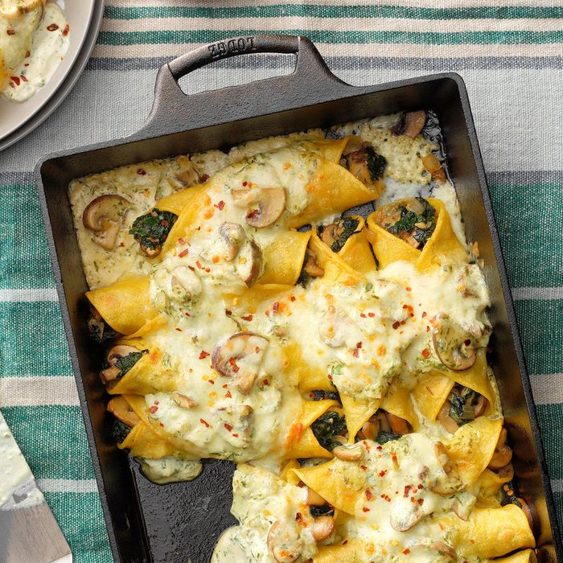

Spinach and Mushroom Enchiladas

Description
A delicious vegetarian mexican dish. Great textures are provided
by the mushroom with no lack of flavour.
Ingredients
- 1 pound baby portobello mushrooms, quartered and sliced
- 1 small onion, finely chopped
- 2 tablespoons butter
- 3 garlic cloves, minced
- 1/4 cup white wine or chicken broth
- 12 ounces chopped fresh spinach, coarsely chopped
- 1/2 teaspoon seasoned salt
- 1/4 cup lime juice
- 1 tablespoon chicken bouillon granules
- 1 tablespoon garlic powder
- 1-1/2 cups sour cream
- 1/2 cup minced fresh cilantro
- 12 corn tortillas (6 inches), warmed
- 1-1/2 cups shredded Monterey Jack cheese
- Crushed red pepper flakes, optional
Directions
- In a large skillet, saute mushrooms and onion in butter until tender; add garlic, cook 1 minute longer. Set aside half of the mushroom mixture for sauce.
- Add wine to remaining vegetables; cook and stir for 2 minutes. Add spinach and 1/4 teaspoon seasoned salt; cook until spinach is wilted and liquid is evaporated.
- In a large saucepan, bring the water, lime juice, chicken bouillon, garlic powder and remaining seasoned salt to a boil, stirring to dissolve bouillon. Stir in the sour cream, cilantro and reserved mushroom mixture; heat through.
- Place a scant 3 tablespoons spinach mixture down the center of each tortilla; roll up and place seam side down in a greased 13x9-in. baking dish. Spoon sauce over top; sprinkle with cheese. Bake, uncovered, at 350° until heated through, 14-18 minutes. If desired, sprinkle with pepper flakes.